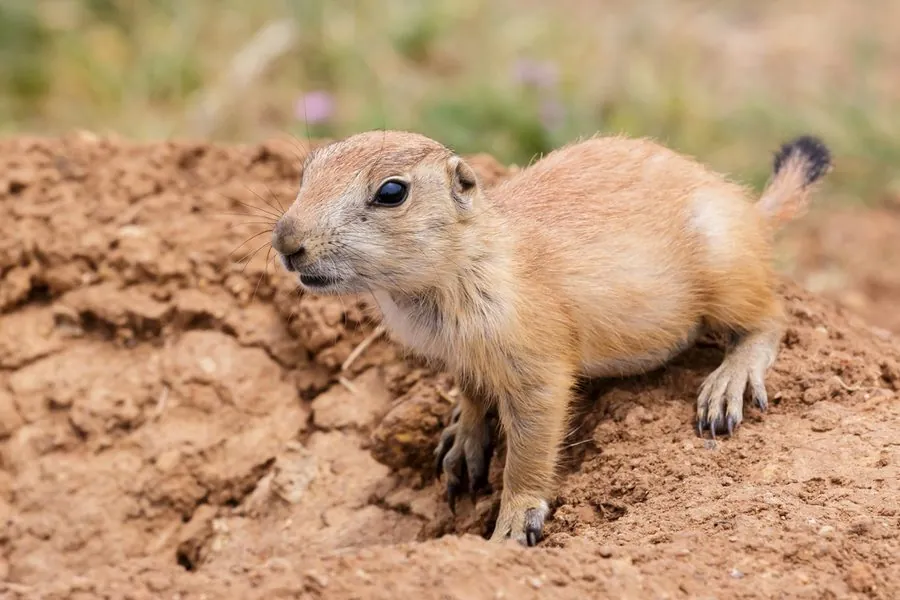

哺乳动物 · 动物界
黑尾土拨鼠 Cynomys ludovicianus

北美大平原上营大型“城镇”的松鼠科动物，尾端黑色，用不同的叫声区分天敌，群体可达数百只，是草原生态的关键种。
- 分类
- 门脊索动物门纲哺乳纲目啮齿目科松鼠科属土拨鼠属
- 栖息环境
- 北美大平原的短草草原、荒漠草原与放牧地
- 地理分布
- 美国中部与西部、加拿大萨斯喀彻温与阿尔伯塔南部、墨西哥北部
- 保护级别
- IUCN 无危（LC）；局部种群因灭鼠行动大幅减少
物种志
黑尾土拨鼠体形圆胖，成年体长 35–43 厘米，尾长 7–10 厘米，体重 0.7–1.4 千克，雄性略大。毛色沙黄至棕褐，腹部浅白，尾端有一撮黑色长毛，是其与白尾土拨鼠区分的主要特征。头圆耳小，眼位于头侧，视野开阔；前爪发达，用于挖掘与修整洞口。
它们栖息于北美大平原的短草草原与荒漠草原，营大型群体生活，家族由一只雄性、数只雌性及幼仔组成，多个家族连成“城镇”，洞道纵横相连，洞口周围堆出环形土丘防止雨水倒灌。白天活动，以草与种子为食，冬眠但不深睡，冬季仍会出洞。发现天敌时，哨兵会直立发出不同的叫声，分别对应鹰、獾、郊狼乃至人类，同伴据此决定躲避或警戒。每年繁殖一胎，孕期约 28–32 天，每胎 3–5 仔。由于被视为牲畜竞争者而被大规模毒杀，其分布区已大幅缩减。
形态与习性
- 体长约 35–43 cm，尾长 7–10 cm
- 体重约 0.7–1.4 kg，秋季偏重
- 食性草、草籽与部分阔叶植物
- 繁殖每年一胎，孕期约 28–32 天，每胎 3–5 仔
- 社会结构家族群居，多个家族连成可覆盖数平方千米的“城镇”
- 通讯用不同叫声区分鹰、獾、郊狼与人类等威胁
- 寿命野外约 3–5 年，饲养下可达 8 年
趣味知识
- 土拨鼠“城镇”可容纳数百只个体，洞道总长以千米计。
- 它们的警报声有“词汇”之分，听到不同的叫声会做出不同反应。
- 洞口堆起的环形土丘既能挡雨，也方便它们站在上面瞭望。